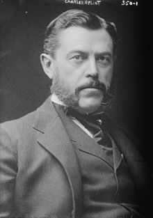

Information technologyInformation technology (IT) is the use of computers to store, retrieve, transmit, and manipulate data, or information, often in the context of a business or other enterprise. IT is considered to be a subset of information and communications technology (ICT). An information technology system (IT system) is generally an information system, a communications system or, more specifically speaking, a computer system – including all hardware, software and peripheral equipment – operated by a limited group of users. Selengkapnya |
|
IBMThe International Business Machines Corporation (IBM) is an American multinational information technology company headquartered in Armonk, New York, with operations in over 170 countries. The company began in 1911, founded in Endicott, New York, as the Computing-Tabulating-Recording Company (CTR) and was renamed "International Business Machines" in 1924. IBM is incorporated in New York. Selengkapnya |
|
|  |
Charles Ranlett FlintFlint was born on January 24, 1850 in Thomaston, Maine. His father, Benjamin Chapman, had changed the family name to Flint after being adopted by an uncle on his mother's side. The family moved from Maine to New York City where his father ran the family's mercantile firm Chapman & Flint, which had been founded in 1837. Selengkapnya |